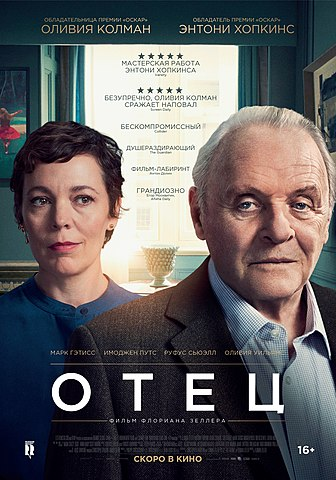
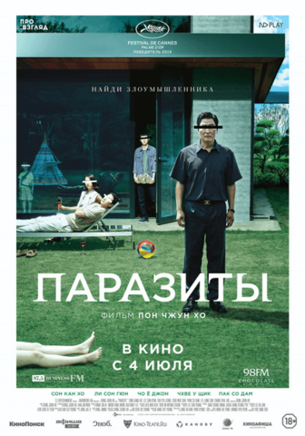
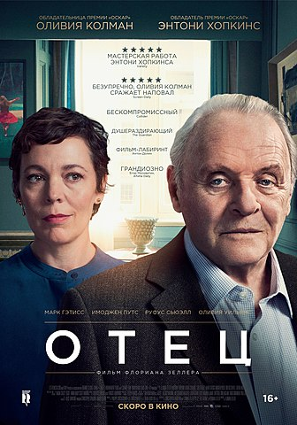
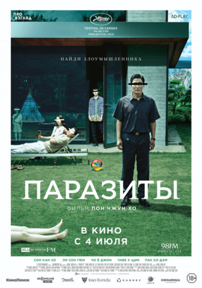
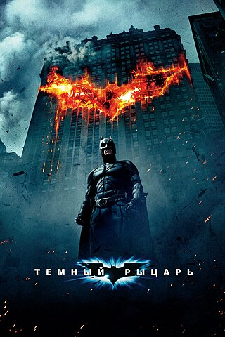

Побег из Шоушенка (1994)
Побег из Шоушенка (1994)
 



Побег из Шоушенка (1994)
Режиссёр: Фрэнк Дарабонт
Америка ・ драма
Бухгалтер Энди Дюфрейн обвинён в убийстве собственной жены и её любовника.
Оказавшись в тюрьме под названием Шоушенк, он сталкивается с жестокостью и беззаконием,
царящими по обе стороны решётки. Каждый, кто попадает в эти стены, становится их рабом до
конца жизни. Но Энди, обладающий живым умом и доброй душой, находит подход как к заключённым,
так и к охранникам, добиваясь их особого к себе расположения.
 Крёстный отец (1972)
Крёстный отец (1972)
Режиссёр: Фрэнсис Форд Коппола
Америка ・ детектив, драма
Криминальная сага, повествующая о нью-йоркской сицилийской мафиозной семье Корлеоне. Фильм охватывает период 1945-1955 годов.
Глава семьи, Дон Вито Корлеоне, выдаёт замуж свою дочь.
В это время со Второй мировой войны возвращается его любимый сын Майкл.
Майкл, герой войны, гордость семьи, не выражает желания заняться жестоким семейным бизнесом.
Дон Корлеоне ведёт дела по старым правилам, но наступают иные времена, и появляются люди,
желающие изменить сложившиеся порядки. На Дона Корлеоне совершается покушение.
 Тёмный рыцарь (2008)
Режиссёр: Кристофер Нолан
Америка ・ боевик, детектив, драма
Бэтмен поднимает ставки в войне с криминалом. С помощью лейтенанта Джима Гордона и
прокурора Харви Дента он намерен очистить улицы Готэма от преступности.
Сотрудничество оказывается эффективным, но скоро они обнаружат себя посреди хаоса,
развязанного восходящим криминальным гением, известным напуганным горожанам под именем Джокер.